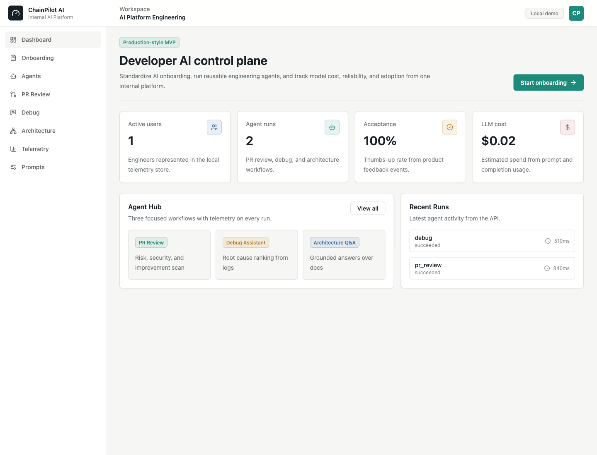
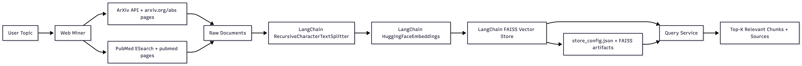
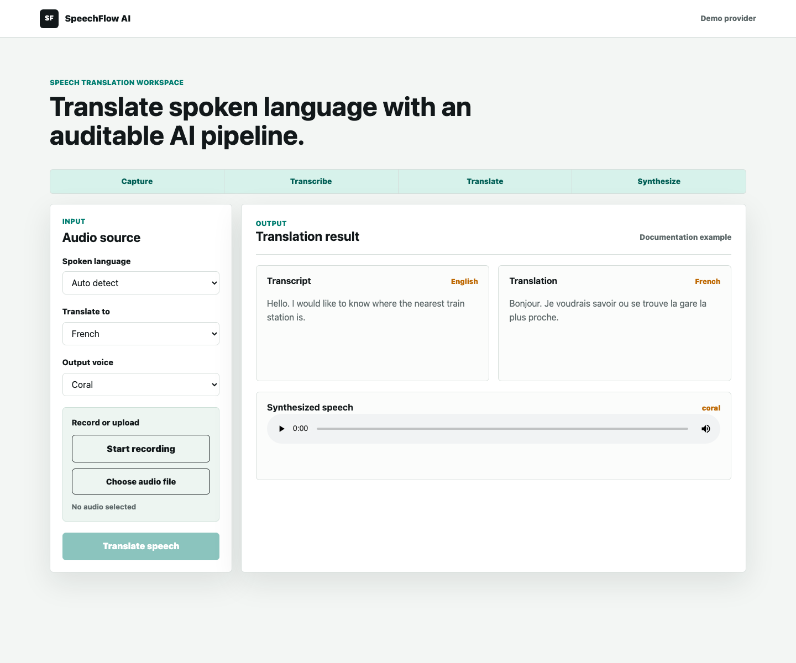

LLM and RAG Applications
Grounded assistants, architecture Q&A, scientific search, support agents, prompt registries, evaluation loops, and retrieval flows with citations.
Senior AI/ML Engineer and Consultant
I design, build, and ship production AI systems: LLM agents, RAG search, recommendation engines, cloud-native ML pipelines, and the telemetry needed to keep them reliable.
What I Build
Grounded assistants, architecture Q&A, scientific search, support agents, prompt registries, evaluation loops, and retrieval flows with citations.
Multi-tenant AI search, ecommerce recommendation engines, query understanding, ranking, and product discovery systems built for measurable business lift.
FastAPI services, Docker, Kubernetes, Airflow, MLflow, CI/CD, Vertex AI, BigQuery, AWS, GCP, telemetry, logging, and production readiness.
Recent Work
HighSkyAI and Zazmic Inc.
Led AI strategy and delivery for production-grade AI systems, improved deployment speed by more than 30%, and reduced ML model training time from seven days to one through optimized GCP pipelines using Vertex AI and BigQuery.
AFEX
Built an AI chatbot with OpenAI, LangChain, 20+ internal APIs, and multiple RAG systems, then led GPT model fine-tuning workflows and annotation processes.
NextBasket
Delivered multi-tenant AI search, chatbot, and recommendation systems for ecommerce, improving sales, engagement, conversion, and average order value.
Portfolio

Developer enablement platform
Internal AI platform for onboarding developers to AI tooling, running reusable PR review, debug, and architecture Q&A agents, and tracking token, cost, latency, reliability, and adoption telemetry.
Open repository
RAG and scientific retrieval
ArXiv and PubMed mining pipeline with chunking, embeddings, FAISS retrieval, complex-question decomposition, grounded answers, citations, structured logs, readiness checks, tracing hooks, and evaluation metrics.
Open repositoryAI customer support agent
LangChain and OpenAI support-agent prototype that classifies intent, extracts order IDs, calls order lookup and refund tools, preserves conversation state, and escalates unresolved or high-value refund cases.
Open repository
Speech translation and voice AI
Browser-based speech translation workspace that records or uploads audio, runs speech-to-text, translates the transcript, and returns synthesized target-language audio through an explicit LangGraph workflow.
Open repositoryNext Builds
Capabilities
LLMs, RAG, prompt engineering, fine-tuning, AI agents, NLP, recommender systems, computer vision, PyTorch, TensorFlow, Keras, scikit-learn, Hugging Face Transformers.
Python, SQL, FastAPI, Flask, Django basics, REST APIs, Apache Spark, Kafka, PostgreSQL, MongoDB, DynamoDB, OpenSearch, ETL and ELT pipelines.
AWS, Google Cloud Platform, Docker, Kubernetes, Apache Airflow, MLflow, CI/CD pipelines, ArgoCD, Comet ML, Git, GitHub, observability, and production operations.
Google Cloud Certified Professional Data Engineer, Google Cloud Certified Professional Machine Learning Engineer, Generative AI with Large Language Models, AWS Certified Cloud Practitioner.
Education
Executive MBA, Business Administration and Management - Rome Business School Nigeria, 2025-2026
Nanodegree, Business Analytics - Udacity, 2023
Information Technology - Data Science - ExploreAI Academy, 2022
Mechanical Engineering - Yaba College of Technology
Contact